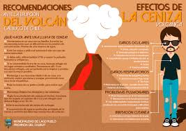
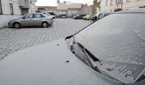
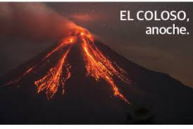
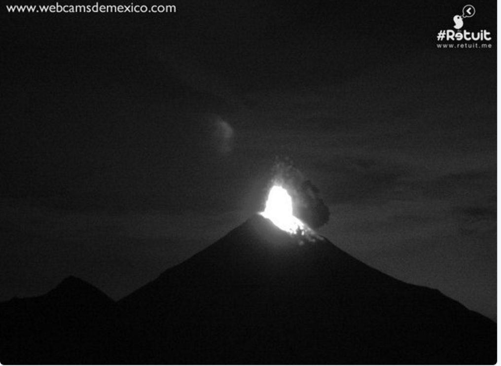

Volcan de Colima

Información
Ubicación
CEl volcán de colima es un estratovolcán ubicado en los límites de los estados de Colima y Jalisco, en México.
Coordenadas geográficas: 19°30′41″N 103°37′05″O
Dimensiones
El volcán de Colima o volcán de Fuego se eleva entre 3870 y 3940 msnm, y su altura se encuentra en un constante cambio gracias a la constante actividad que ha presentado durante los últimos años; por eso resulta difícil decir con exactitud cuál es en estos momentos.
Dependencias que lo monitorean
Según define la Organización Internacional de Protección Civil, la protección civil es un sistema por el que cada país proporciona la protección y la asistencia para todos ante cualquier tipo de desastre o accidente relacionado con esto, así como la salvaguarda de los bienes del conglomerado y del medio ambiente.
Medidas Preventivas
En caso de caida de ceniza
1.Prepara para cada miembro de tu familia, una tarjeta con su nombre y dirección.
2.Si tu vivienda tiene servicios de gas, luz y agua, asegúrate de saber como se cierran.
3.Si puedes guarda: agua potable y alimentos, las medicinas que estés tomando tú o alguien de tu familia, así como tus documentos más importantes, como títulos de propiedad, actas de nacimiento o matrimonio, cartillas, etc.
4.Procura tener a la mano un radio de pilas, linterna y las llaves de tu casa.Cubre los depósitos de agua y alimentos para evitar que se contaminen con las cenizas que puedan caer.
5.Si tienes ganado o cualquier tipo de animales consulta en la unidad de Protección Civil qué debes de hacer con ellos.
En caso de erupción
1.Conserva la calma, reúne a tu familia, pónles una identificación, cuida que puertas y ventanas queden cerradas y coloca una sábana o tela blanca hacia la calle para comprobar que se trata de un domicilio evacuado.
2.Ve inmediatamente a los centros de reunión. Lleva solo lo indispensable.
3.Si puedes evacuar por tus propios medios, no dudes en hacerlo y dirígete al refugio temporal que te corresponde.
4.Al llegar al refugio temporal regístrate y ubícate en el sitio que se te indique.
5.Si requieres atención médica, acude a la instalación más cercana del Sistema de Salud.
6.En el refugio temporal colabora en lo que se te pida, mantén contacto con las autoridades, ellas te indicarán las reglas a seguir durante tu estancia. Asimismo te informarán sobre la evolución de la emergencia, hasta que esta termine.
7.Si no puedes localizar el centro de reunión o no se presenta el medio de transporte para evacuarte, aléjate del volcán caminando por las partes altas hasta un lugar seguro.
Actividad volcánica
Durante la noche del miércoles y la madrugada de este jueves, el Volcán de fuego de Colima registró tres explosiones.
Según el portal webcamsdemexico, el coloso tuvo otra erupción a las 6.20 de este jueves. La plataforma, desde el año pasado, instaló una cámara de video para poder monitorear la actividad del volcán de Colima.
En las explosiones que se registraron, el coloso arrojó material incandescente, por lo que prevé la caída de ceniza en las comunidades cercanas al volcán, entre ellas, la Yerbabuena y la Becerrera en Colima que se encuentran a escasos 7 kilómetros de las faldas del volcán.
Las columnas eruptivas que se registraron durante la noche del miércoles y la madrugada de este jueves alcanzaron los 2 mil metros, sobre el cráter.
En las últimas 24 horas, el volcán ha registrado seis explosiones.
